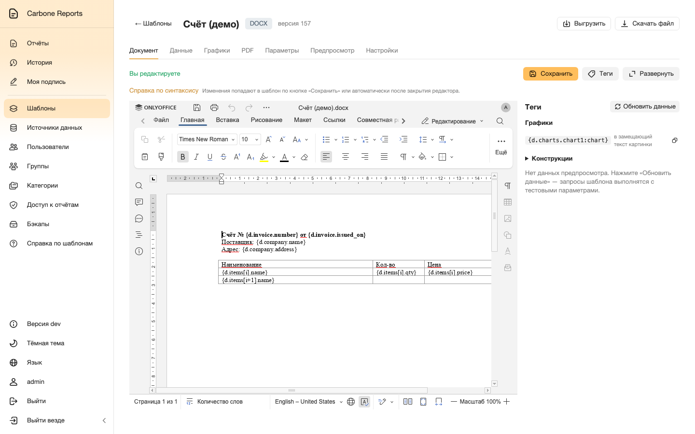
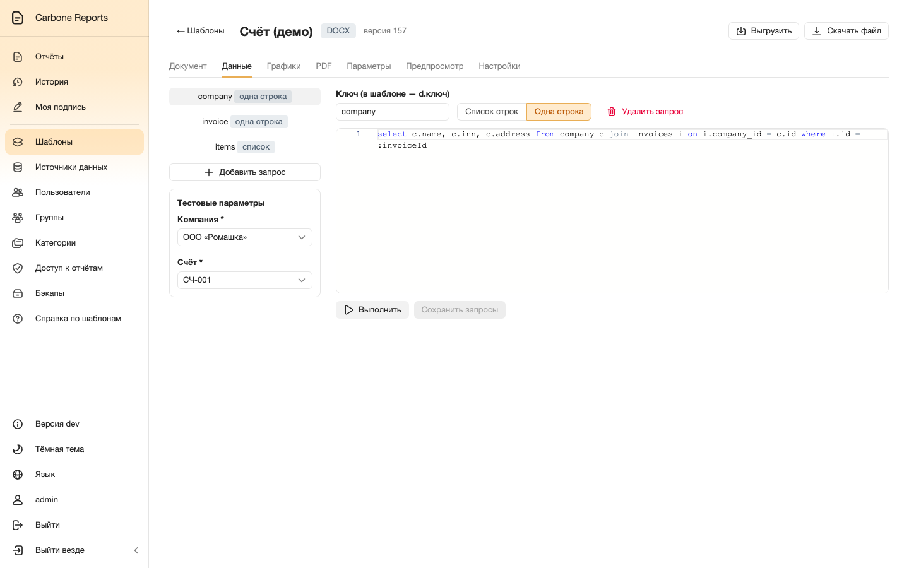
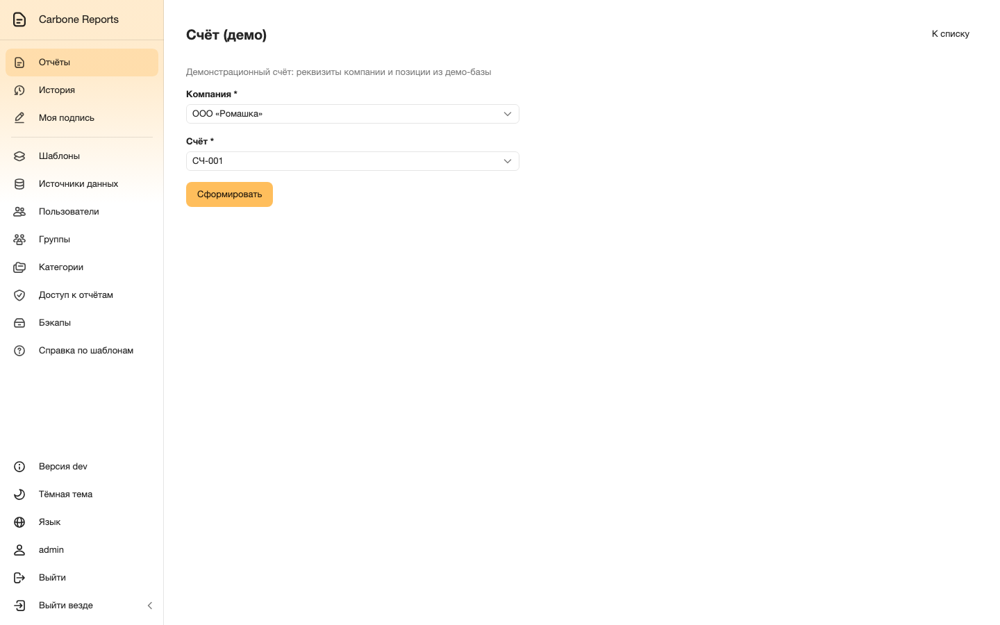
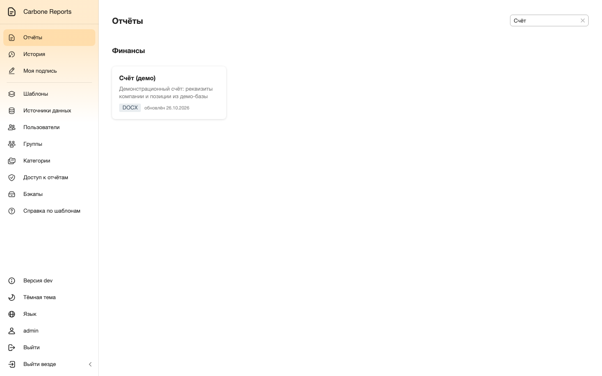
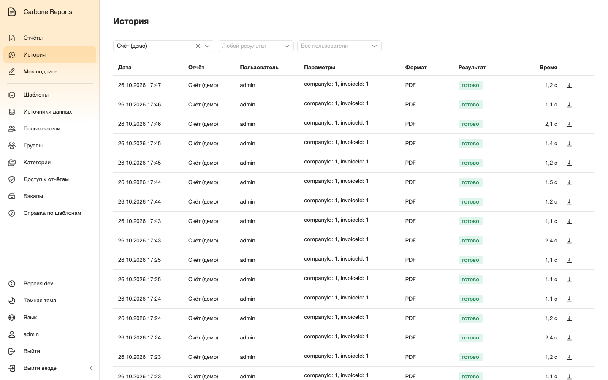
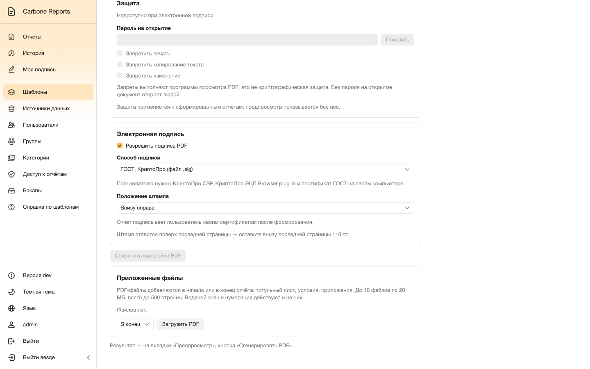
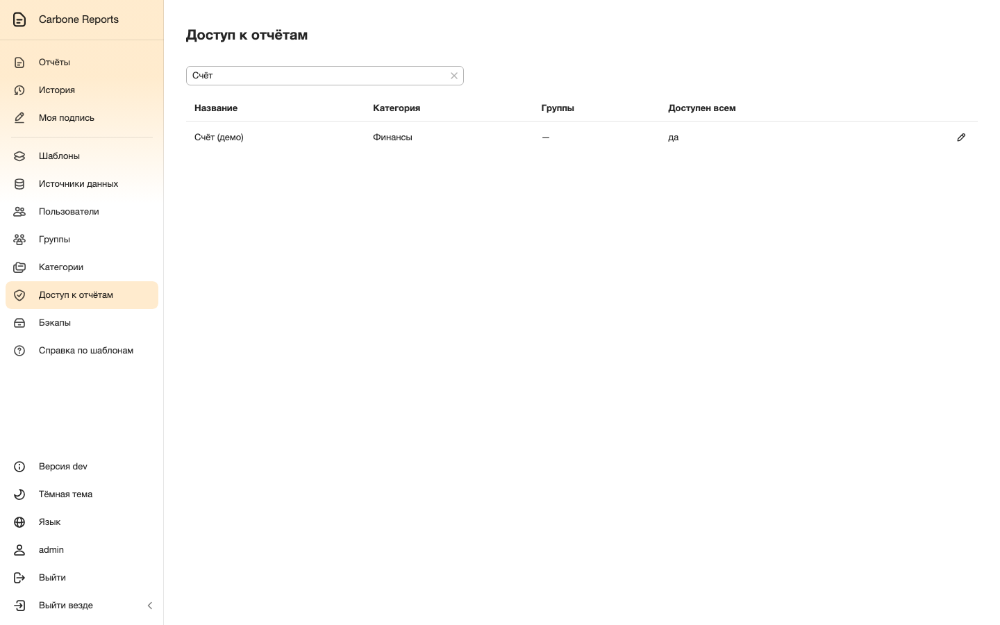
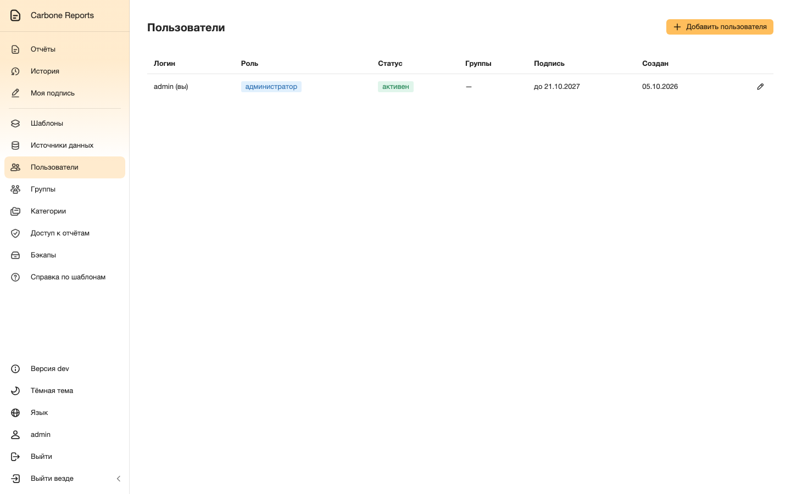
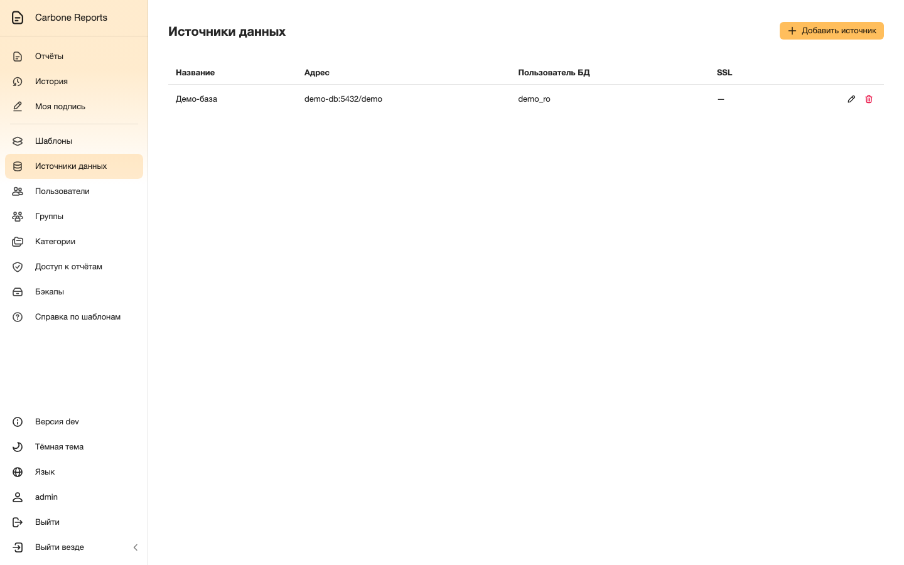
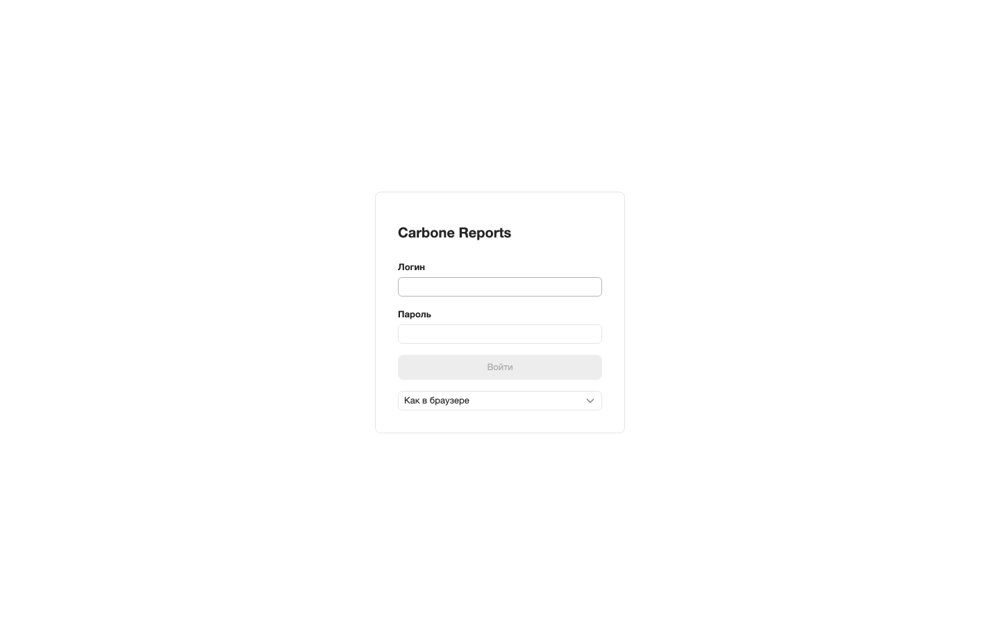

Автор готовит шаблон
Шаблон — обычный документ Word или Excel с тегами вида
{d.company.name}. Он открывается во встроенном редакторе OnlyOffice —
ставить Word или Excel не нужно.
Данные приходят из SQL-запросов к подключённым базам. Запросы выполняются только на чтение, параметры отчёта подставляются в них по имени.




select c.name, c.inn, c.address
from company c
join invoices i on i.company_id = c.id
where i.id = :invoiceId
Пользователь формирует отчёт
Отчёты разложены по категориям, и каждый видит только то, к чему ему открыт доступ.
Форма запуска строится из параметров шаблона: даты, числа и списки, в том числе зависимые списки из SQL-запросов. Сформированные отчёты остаются в истории — их можно открыть снова, скачать в другом формате или подписать позже.






Подпись и контроль
PDF подписывается сертификатом пользователя (.p12) или ключом по ГОСТ через КриптоПро — ключ ГОСТ не покидает компьютер пользователя. В PDF добавляются водяной знак, нумерация страниц и постоянные приложения; есть PDF/A и защита паролем.
Доступ выдаётся по группам и категориям; роли разделяют пользователей, авторов шаблонов и тех, кто управляет доступом. Вход — локальные учётные записи, LDAP/Active Directory или Keycloak (OpenID Connect).










Установка
В составе — веб-интерфейс, API, OnlyOffice Document Server, PostgreSQL, Redis и S3-хранилище. В Kubernetes система ставится из Helm-чарта:
helm install cr oci://ghcr.io/samrozhkov/charts/carbone-reports --version 2.18.0 -n reports -f my-values.yaml